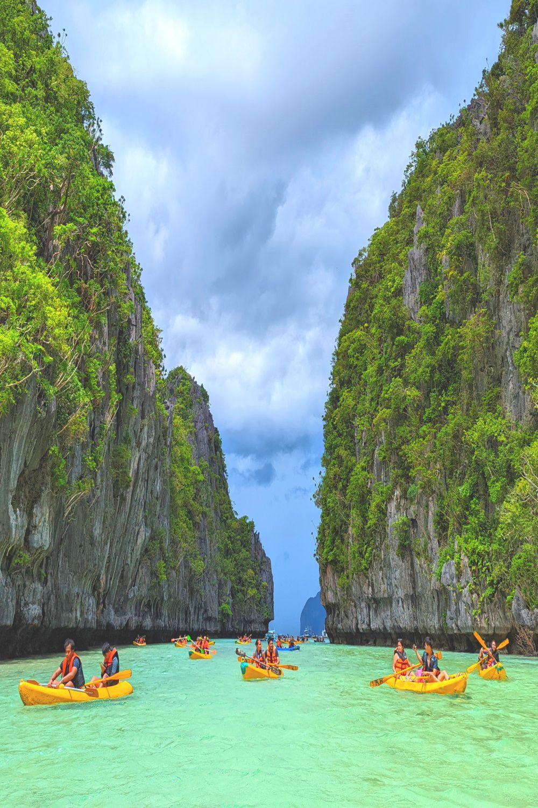
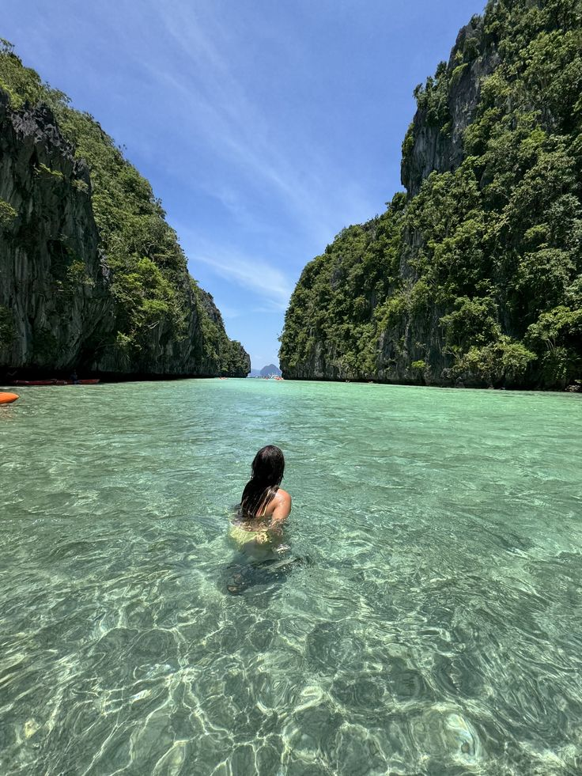
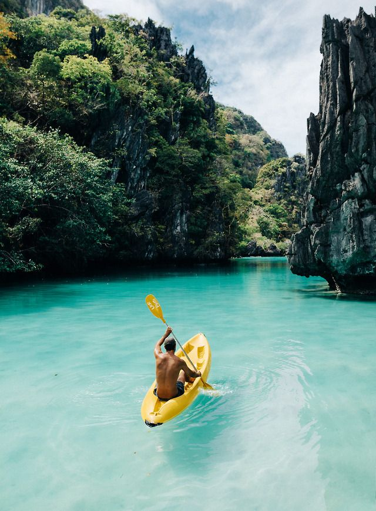
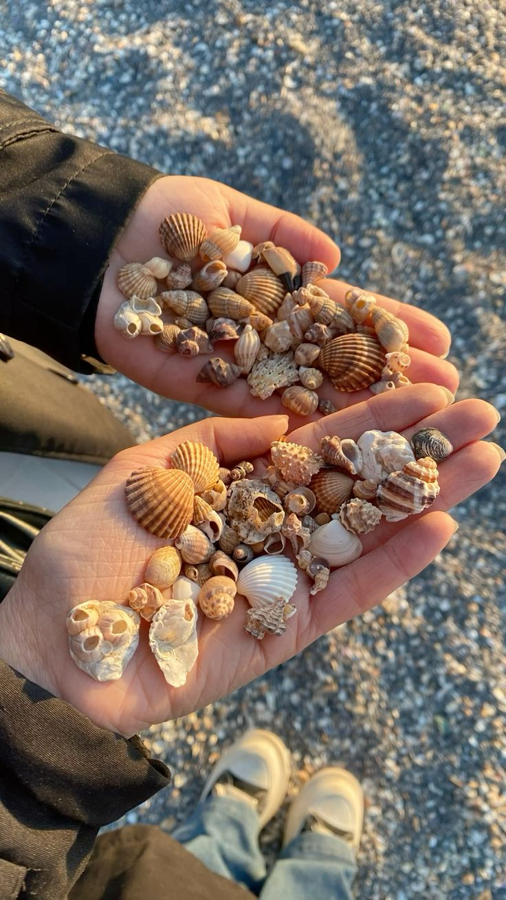
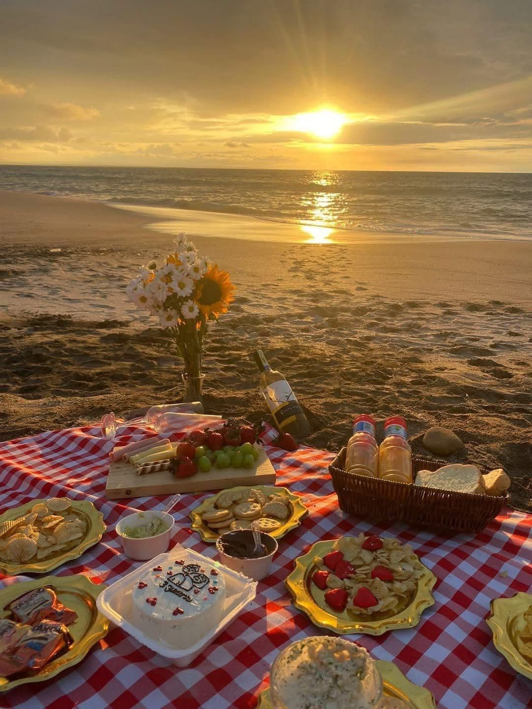
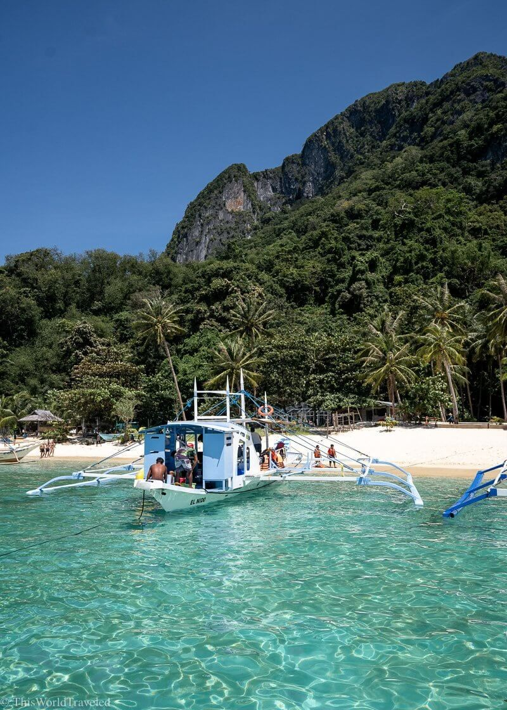

Visiting the Big Lagoon in El Nido, Palawan offers a multitude of exciting activities and experiences. Here are some of the top things to do in this enchanting destination:

1. Kayaking:
One of the best ways to explore the Big Lagoon is by kayaking. Rent a kayak and paddle through the calm, turquoise waters at your own pace. Discover hidden coves, navigate through limestone formations, and marvel at the rich marine life as you glide through the lagoon’s pristine waters.

2. Swimming:
Take a refreshing dip in the crystal-clear waters of the Big Lagoon. The calm and inviting lagoon is perfect for a leisurely swim, allowing you to cool off while surrounded by stunning natural beauty. Just be mindful of the designated swimming areas and respect the marine ecosystem.

3. Snorkeling:
Put on a mask and snorkel to immerse yourself in the vibrant underwater world of the Big Lagoon. Discover colorful coral reefs teeming with tropical fish, sea turtles, and other marine creatures. Snorkeling here offers a unique opportunity to witness the diverse marine life that calls the lagoon home.

4. Photography:
FThe Big Lagoon is a photographer’s paradise. Capture the breathtaking views and unique rock formations that surround the lagoon. The still waters and towering cliffs provide a stunning backdrop for your photos, creating picture-perfect moments you’ll treasure forever.

5. Beachcombing:
As you explore the shoreline of the Big Lagoon, keep an eye out for seashells and other treasures that may wash up on the beach. Beachcombing can be a relaxing and rewarding activity, allowing you to connect with nature and find small mementos to take home with you.

6. Picnicking:
Bring a packed lunch or grab a beachside spot and enjoy a picnic with a view. The Big Lagoon offers several spots where you can lay out a blanket and indulge in a delicious meal surrounded by stunning natural beauty. Just remember to practice responsible tourism and dispose of any waste properly.

7. Boat Tours:
Many island-hopping tours in El Nido include a stop at the Big Lagoon. Joining a boat tour allows you to relax and enjoy the scenic beauty of the lagoon, as well as visit other nearby attractions. Professional guides will provide insights about the area, making your experience even more enriching.